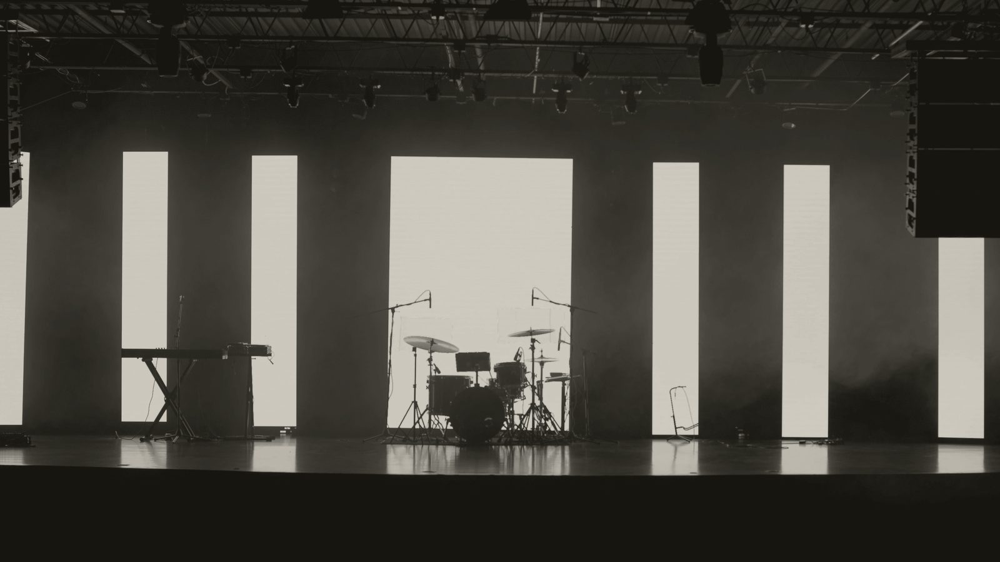

Acoustic duo
An acoustic duo for cocktail hours and dinner parties.
Two players, voice and guitar or guitar and upright bass, playing covers people know at a volume they can talk across. $1,050 for a single hour, $2,000–2,800 for cocktails and dinner together, and every figure around it is on the published rate card.
This is the size most events actually need. Big enough to read as live music from across the venue, small enough to set up in an 8 by 6 ft corner on one circuit and stay under the conversation it plays for. Patios, welcome drinks, dinner parties and cocktail hours are its regular work.

Footage slot
The set
Songs guests can name.
The set is singer-songwriter and folk-rock covers, the catalog guests recognize by the second line. That is the working difference between this page and the jazz duo, which plays standards guests recognize without naming. Same footprint, same volume, same price: the choice is what the crowd should hear.
A set is built against your run of show and read on the night rather than played in order. The full covers list is published and searchable on the repertoire page, and the first learned song beyond it is included in every booking.
Two builds
Sung, or instrumental.
- Voice and guitar
- The sung version. Cocktail hours, welcome drinks and patios take it best: familiar songs, sung, at talking level, with enough presence to mark the occasion without running it.
- Guitar and upright bass
- The instrumental version. Dinner takes it best: the melodies stay familiar, the lyrics stop competing with conversation, and the arrangement leaves space in the middle of the sound where the table talk sits.
Either build runs dinner and cocktail sets at 65 to 72 dBA at the nearest table, and a two-piece cannot drift to dance floor level by accident. Outdoors it plays on a covered, level and dry performance area with power run to it; Colorado patio evenings cool fast, and the move-indoors call is written before the day.
Footprints and power by size are on the technical page. When the same night should grow into a dance floor, Tejas Singh ladders the duo shape up to a quartet on one contract.
Where it lands
Four occasions book this size.
The acoustic duo is the answer when the event wants live, familiar and conversational at once. Each occasion links to the page that prices the whole night around it.
- Wedding cocktail hours
- The hour between ceremony and dinner, sung or instrumental. The cocktail hour page answers the hour's questions, and the Denver cocktail hour page covers the city's venues.
- Dinner and cocktail parties
- At home, at a club, in a private dining space. Private parties and dinners carries the shapes and the prices for the whole night.
- Welcome drinks and receptions
- The arrival hour of a corporate evening, before the program starts. The corporate page sets out how music sits around remarks and awards.
- Client dinners
- Where conversation is the event and the music holds the level all night. The client dinners page covers the corporate paperwork side.
What live music costs across Colorado, size by size, is set out in the cost guide.
What it costs
One hour, or the whole front of the night.
- An hour of acoustic duo
- $1,050
- Cocktails and dinner together
- $2,000–2,800
A call-out and four hours runs $2,400, and mountain dates price at $2,800–3,800 with travel published as its own line. Added time on the night bills at the same hourly rate in 30-minute increments; there is no overtime rate.
Sound sized to the venue is included in every figure. The whole card, both columns, is on the pricing page, with the arithmetic behind it in the cost guide.
Acoustic duo questions
The operational questions, from substitutions to decibel caps, are on the full question list.
- What is the difference between the acoustic duo and the jazz duo?
- Repertoire. The acoustic duo plays singer-songwriter and folk-rock covers, songs guests can name by the second line. The jazz duo plays standards, songs guests recognize without naming. Footprint, volume and price are the same, so the choice is what the crowd should hear, and both pages carry sample material.
- Which instrumentation should we choose?
- Voice and guitar when the songs should be sung: cocktail hours, patios, welcome drinks. Guitar and upright bass when the night wants them instrumental, which usually means dinner. The price is the same either way, and so is the volume discipline: 65 to 72 dBA at the nearest table.
- Can the acoustic duo play outside?
- Yes, and patios are its regular work. The requirements are a covered, level and dry performance area with power run to it, and a move-indoors call written before the day. Colorado evenings cool fast, and instruments and electronics both stop behaving in the cold and the wet.
- How long can the duo play?
- Sets run 45 to 60 minutes with 15 to 20 between them, built against your run of show, and audio continues through breaks so the night never goes silent. Added time on the night bills at the same hourly rate in 30-minute increments. There is no overtime rate.
- What if the night needs an acoustic trio?
- The rate card prices a trio at $2,800 to $3,800 for a Denver evening, and that line is already sold two ways that keep the duo's dinner discipline: the jazz trio, which adds drums played with brushes for larger floors, and Tejas Singh, whose voice-fronted trio sits on the ladder between duo and quartet. Either books on the same contract terms as the duo.
Familiar songs, at a volume guests can talk across.
Live music sized to the event, solo, duo, trio or quartet, with published rates and a single point of contact.
Send the date and the venue. You get the date held or a straight no, and every figure is on the rate card before you write.